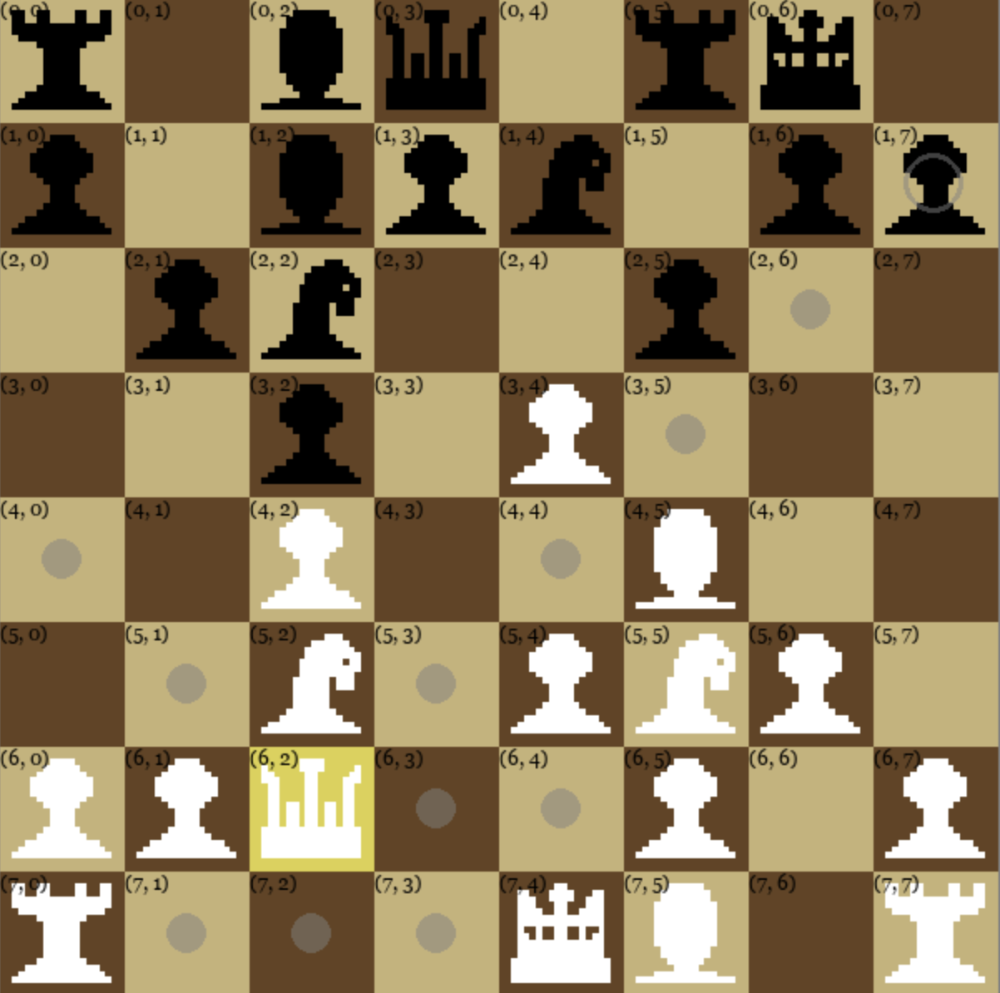
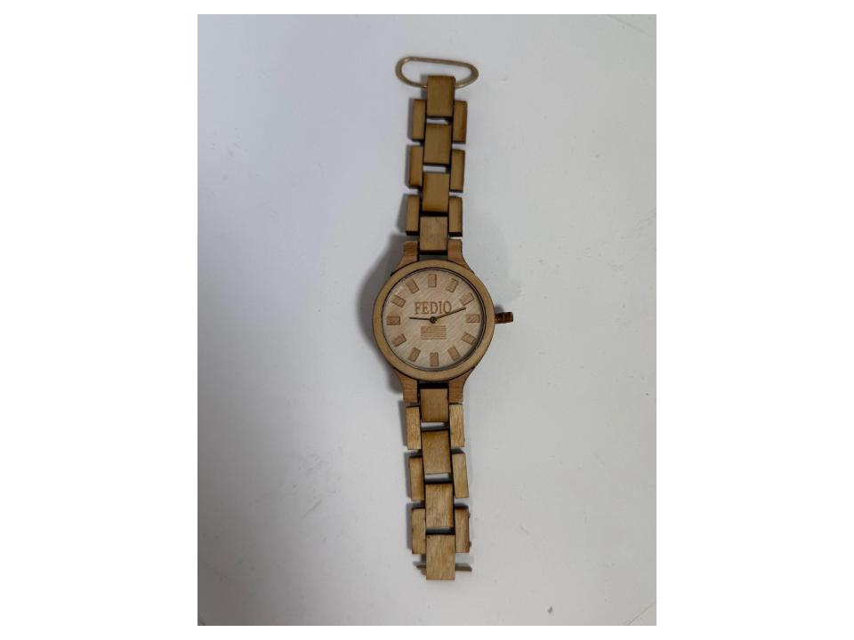

I am a highly motivated junior studying computer science in Tufts University's School of Engineering. My core curriculum has focused on C and C++, and I've taken electives that have taught me HTML, CSS, Javascript, and Python, the first three of which I'm using to help me create this very site! I have a passion for using computer science to solve problems, and I'm always expanding my knowledge. In my free time, I use my problem-solving skills and creativity in physical mediums as well.
I am currently seeking opportunities to apply my knowledge in challenging roles where I can contribute to meaningful projects and continue my development as an engineer.
My Technical Toolkit
Core Languages
C/C++, Java, Python, Swift
Web Fundamentals
HTML, CSS, JavaScript, React, APIs
Theory & Tools
Data Structures, Algorithms, GitHub
Analysis & Design
Object-Oriented Design (OOD), Data Analytics, Visual Studio Code
Fabrication
CAD, Prusa Slicer, Inkscape, Woodworking
Featured Projects
Chess
Personal Project
Engineered a complete, playable chess application from scratch using Python and Pygame. Leveraged object-oriented programming to efficiently manage complex game state, enforce strict rules (including castling and checkmate), and handle piece logic. Compiled to WebAssembly using Pygbag for native browser play. No AI used.
- Python & Pygame
- WebAssembly (Pygbag) Deployment

Wooden Wristwatch
Hobby Project
My custom wristwatch made out of wood. This project was almost entirely new territory for me, but I love how it came out.

Modified Grep Linux Command
CS15: Data Structures and Algorithms --- Final Project
A modified recreation of the Linux Grep Command. This program takes in a directory of text files and lets the user query words from those files. The program writes to an output file all instances of the queried word and the line number and files in which they were found.
- Custom Hash Map Interface
- File I/O

PPM Compression Program
CS40: Machine Structures --- Midterm Project
This program compresses a supplied .ppm image (and likewise can decompress a supplied compressed image) to roughly 1/3rd of the original file size while maintaining ~95% of image data upon decompression.
- Bit Packing
- Discrete Cosine Transformations and Linear Quantization